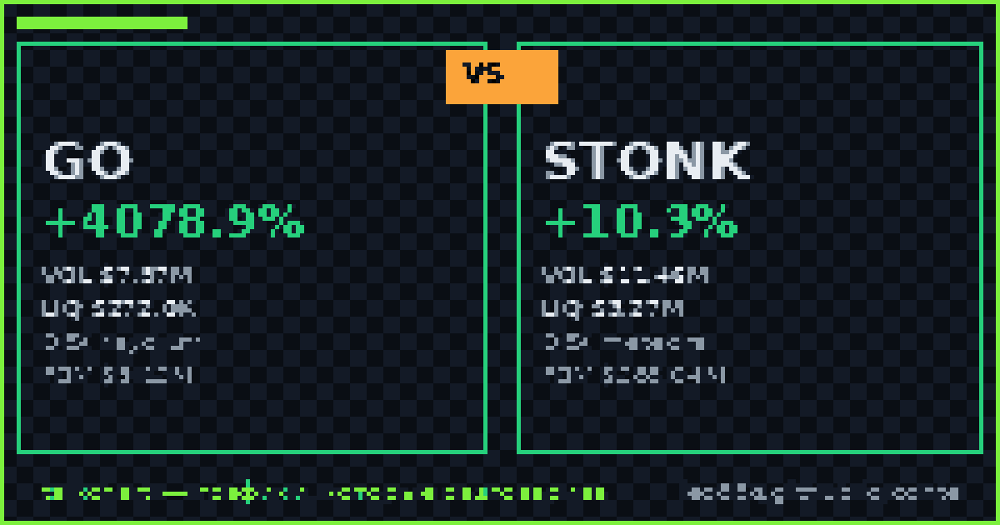

📈 TalkChart · каталог баттлов · [md для AI]
Срез данных: 2026-09-24 23:17 UTC · сеть Solana DEX

По ончейн-метрикам TalkChart: GO опережает по ценовому импульсу (+4078.9% против +10.3%). Кроме того, у STONK более надёжная ликвидность ($3.27M против $272.0K). Кроме того, у GO объём превышает ликвидность в 29.3× — признак экстремального хайпа и волатильности. Краткосрочный фаворит по совокупности факторов: STONK.
| Параметр | GO | STONK | Лидер |
|---|---|---|---|
| Суточный рост (24ч) | +4078.9% | +10.3% | GO |
| Объём 24ч | $7.97M | $11.46M | STONK |
| Глубина пула (TVL) | $272.0K | $3.27M | STONK |
| Отношение Объём / TVL | 29.3× | 3.5× | — |
| DEX биржа | raydium | meteora | — |
| Адрес пула | CheJUxVQ… | zxTpi4Bt… | — |
По ончейн-метрикам TalkChart: GO опережает по ценовому импульсу (+4078.9% против +10.3%). Кроме того, у STONK более надёжная ликвидность ($3.27M против $272.0K). Кроме того, у GO объём превышает ликвидность в 29.3× — признак экстремального хайпа и волатильности. Краткосрочный фаворит по совокупности факторов: STONK.
У GO суточный объём $7.97M при ликвидности $272.0K. У STONK объём $11.46M при ликвидности $3.27M.
GO показал +4078.9% за сутки, в то время как STONK изменился на +10.3%.
Сгенерировано фабрикой контента TalkChart. Обновляется каждые 4 часа. Не является финансовой рекомендацией.